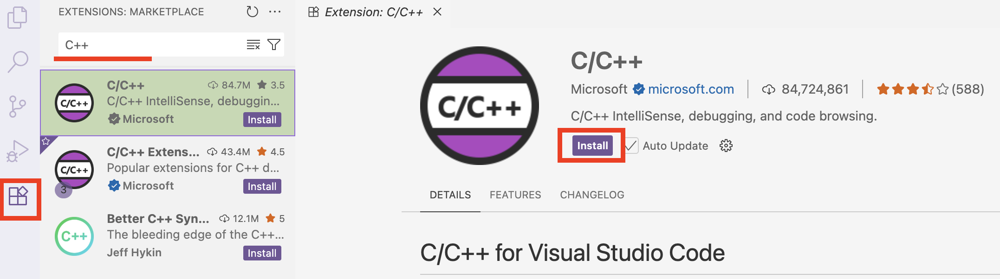
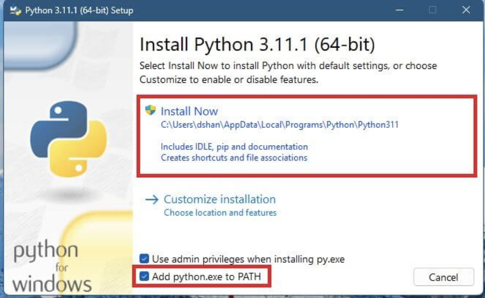

Guide for VSCode and Python Installation
This guide is designed for users who do not have Python or Visual Studio Code installed on their machine.
Note: The guide is divided into three parts: Windows, Linux and macOS users. Please follow the appropriate instructions for your operating system.
First, you need a platform (Integrated Development Environment) to run Ionique . Visual Studio Code (VS Code) is a convenient IDE to start with.
Installing VS Code
Windows Users
1. Install VS Code
Go to the VS Code website, download.
Run the installer.
On the first screen, check the boxes Add Python to PATH and Register code ….

Finish installation.
2. Install Required Extensions
A few package requirements include C++ extensions and compilers.
Open VS Code.
Click the Extensions icon on the left sidebar.
Find and install the extension shown below:

3. Install Compilers (Build Tools)
Visit the Visual Studio Downloads page.
Scroll down to All Downloads > Tools for Visual Studio.
Download Build Tools for Visual Studio 2022.

Run downloaded Installer.
In the dialog, check the Desktop development with C++ workload and click Install.

4. Install Python.
Skip this step if you already have Python!
Visit Python Downloads for Windows.
Choose a version between 3.10 and 3.12 and download.
Run the installer.
On the first screen, check the box for “Add Python to PATH”.
Click Install Now.

Linux Users
1. Download and Install VS_Code
Go to the VS Code download page.
Download the
.debpackage.
2. Open a Terminal
You can search for “shell” or use the shortcut Ctrl + Alt + T.
Check your current location:
pwd
Navigate to the Downloads folder (or wherever you saved the .deb file):
cd <DIRECTORY_NAME>
List files to confirm:
ls
Install VS Code:
sudo dpkg -i code_1.XXX.deb
Replace
code_1.XXX.debwith the actual filename.
3. Install Python
Skip this step if you already have Python!
Visit the Python Downloads page.
Download a version between 3.10 and 3.12.
Use your package manager or install from source.
For Ubuntu-based systems:
sudo apt update
sudo apt install python3.XX
Replace
XXwith a version here
macOS Users
1. Install VS Code
Download VS Code for Mac from here.
Open your browser’s download list and find the installer.
If it’s a
.ziparchive, extract the contents by double-clicking.Drag
Visual Studio Code.appinto your Applications folder.Open VS Code from the Applications folder or Launchpad.
2. Install Python
Skip this step if you already have Python!
Visit the Python Downloads page.
Choose a version between 3.10 and 3.12.
Double-click the downloaded
.pkgfile to launch the installer.Follow the on-screen steps. The default settings are usually sufficient.
You may be asked to enter your Mac password during installation.